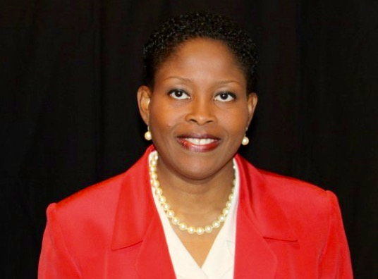

“... A strong family creates a strong community and, in turn, a strong community creates a strong society ...”
– Patricia Brimais-Tenemille

On Thursday, September 10th
VOTE
Patricia Brimais-Tenemille
Rockland County Family Court Judge
- Current Family Support Magistrate
- 19 years of experience litigating Family Law matters
- Former Domestic Violence Prosecutor
- Former Matrimonial/Divorce Attorney at Abel and Brustein-Kampel
- Former Certified Family and Divorce Mediator
- Former Director of County Office of Equal Employment Opportunity and Affirmative Action
- Former Adjunct Professor of Legal Studies at SUNY/Rockland Community College